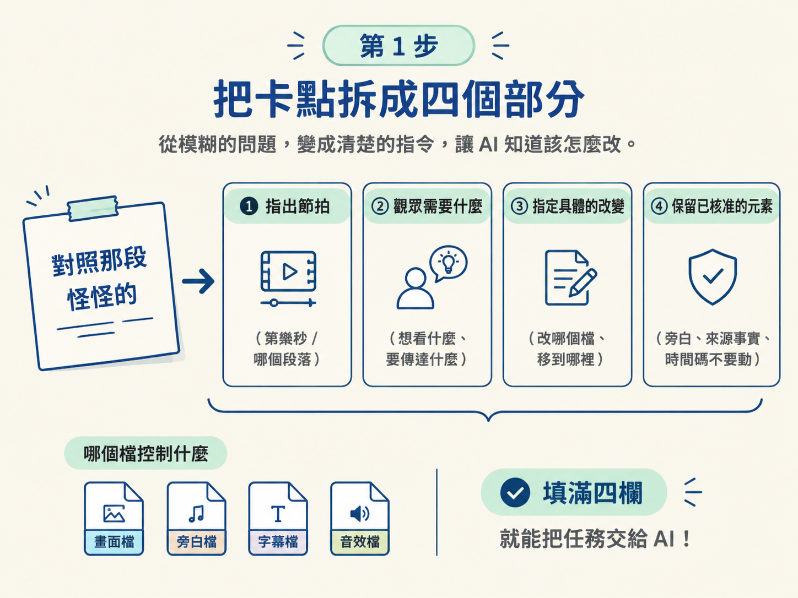

這一步接在上一課的卡點描述後面。你要把一句「哪裡看不懂」，整理成 AI 可以照著執行的修正請求。
做完後，你會拿到三樣東西：一份寫好的修正請求、針對指定節拍更新過的畫面，以及一份簡短的修改註記。動手前，請先準備好上一課留下的那一句卡點描述。
你的輸入就是上一課留下的觀察。例如：「在對照那一段，便利貼和卡片沒有同時出現。」
這句話至少要包含兩個資訊：
如果只有「對照那段怪怪的」，訊息還不夠。請先把它補到能讓別人定位問題的程度，再交給 AI。
先不要急著請 AI 修改。你要先把描述整理成四個欄位。這一步由你負責檢查內容；AI 之後才根據這些條件動手。
前面幾課建立的「哪個檔控制什麼」，現在就會派上用場。你越清楚每個檔案的職責，就越能說出「請改哪一個檔」，而不是只丟下一句「畫面不對」。

在 Sam 的便利貼範例裡，場景複習後做了兩個具體修正。
你的預覽可能需要完全不同的修正。重點不是照抄這兩項，而是把你實際看到的畫面說清楚：在哪個節拍發生問題、觀眾缺少什麼線索，以及要怎麼改才看得懂。
把前面的四個部分串起來，就能得到一份可直接交給 AI 的請求。請把中括號換成你自己的內容：
請看 meeting-note-explainer 的旁白預覽，搭配來源便利貼和 cues 分鏡。
在［說出節拍或播放時間］，我這裡看不懂，因為［觀眾看不到或跟不上什麼］。
請做這個修正：［具體的改變］。
已核准的旁白和來源事實請保持不變。
存一份簡短的修改註記，把更新後的靜格給我看，並從上一個節拍播進這一格。這段請求同時畫出了兩條界線：哪些地方要改，以及哪些內容不能改。只寫「請修正畫面」，等於讓 AI 自由發揮；把界線寫清楚，才比較能得到預期的結果。
接下來由 AI 動手，你負責確認它有沒有交付這一步要求的東西。按照下面順序操作：
這裡的檢查只確認「新畫面和修改註記有沒有拿回來」，先不要判斷修正到底有沒有用。這一課負責送出請求、取得更新結果；修正是否真的有效，留到下一課再檢查。
完成後，請確認手上有以下三項成果：
這個請求格式不依賴特定主題。之後換成自己的影片時，只要依序寫出「指出節拍、說明觀眾需要、指定改變、保留已核准元素」，就能重新使用。
一份有用的請求包含四件事：指出節拍、說出觀眾需要看到什麼、指定具體的改變、保留已核准的旁白與事實。把「改什麼」和「保留什麼」都寫清楚，AI 才不會改到你沒打算動的地方。
下一課會處理另一個問題：AI 說它改好了，但你怎麼知道這次修正真的有用？屆時要用兩種不同的檢查，並從剛才那個「上一個節拍」播進來看。